2023 Higher Human Biology - Paper 2 marking instructions
Source: Scottish Qualifications Authority (SQA) / Qualifications Scotland. This is a StemInteract HTML companion, not an official HTML edition. Extracted text is supplied alongside unaltered page images; use the images or original PDF for table layout, diagrams and symbols.
Jump to a question
PDF page 1
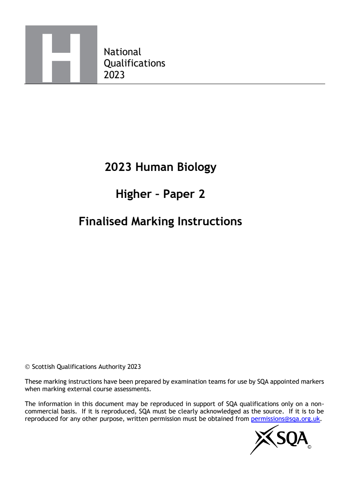
Selectable page text
National
Qualifications
2023
2023 Human Biology
Higher – Paper 2
Finalised Marking Instructions
© Scottish Qualifications Authority 2023
These marking instructions have been prepared by examination teams for use by SQA appointed markers
when marking external course assessments.
The information in this document may be reproduced in support of SQA qualifications only on a non-
commercial basis. If it is reproduced, SQA must be clearly acknowledged as the source. If it is to be
reproduced for any other purpose, written permission must be obtained from permissions@sqa.org.uk.
©PDF page 2
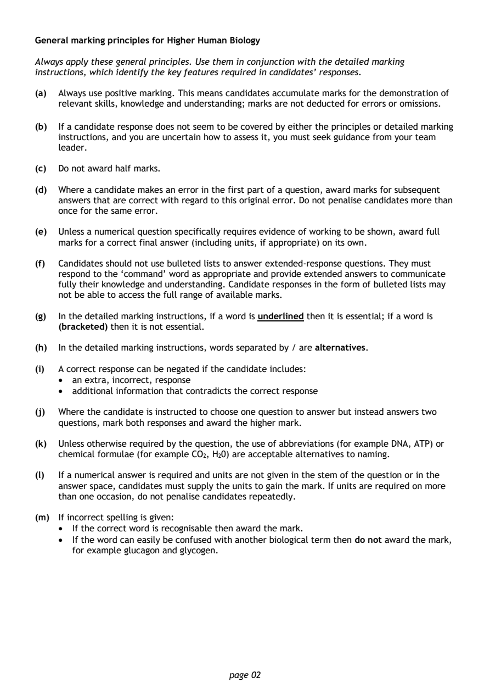
Selectable page text
General marking principles for Higher Human Biology
Always apply these general principles. Use them in conjunction with the detailed marking
instructions, which identify the key features required in candidates’ responses.
(a) Always use positive marking. This means candidates accumulate marks for the demonstration of
relevant skills, knowledge and understanding; marks are not deducted for errors or omissions.
(b) If a candidate response does not seem to be covered by either the principles or detailed marking
instructions, and you are uncertain how to assess it, you must seek guidance from your team
leader.
(c) Do not award half marks.
(d) Where a candidate makes an error in the first part of a question, award marks for subsequent
answers that are correct with regard to this original error. Do not penalise candidates more than
once for the same error.
(e) Unless a numerical question specifically requires evidence of working to be shown, award full
marks for a correct final answer (including units, if appropriate) on its own.
(f) Candidates should not use bulleted lists to answer extended-response questions. They must
respond to the ‘command’ word as appropriate and provide extended answers to communicate
fully their knowledge and understanding. Candidate responses in the form of bulleted lists may
not be able to access the full range of available marks.
(g) In the detailed marking instructions, if a word is underlined then it is essential; if a word is
(bracketed) then it is not essential.
(h) In the detailed marking instructions, words separated by / are alternatives.
(i) A correct response can be negated if the candidate includes:
• an extra, incorrect, response
• additional information that contradicts the correct response
(j) Where the candidate is instructed to choose one question to answer but instead answers two
questions, mark both responses and award the higher mark.
(k) Unless otherwise required by the question, the use of abbreviations (for example DNA, ATP) or
chemical formulae (for example CO , H 0) are acceptable alternatives to naming.
2 2
(l) If a numerical answer is required and units are not given in the stem of the question or in the
answer space, candidates must supply the units to gain the mark. If units are required on more
than one occasion, do not penalise candidates repeatedly.
(m) If incorrect spelling is given:
• If the correct word is recognisable then award the mark.
• If the word can easily be confused with another biological term then do not award the mark,
for example glucagon and glycogen.
page 02PDF page 3
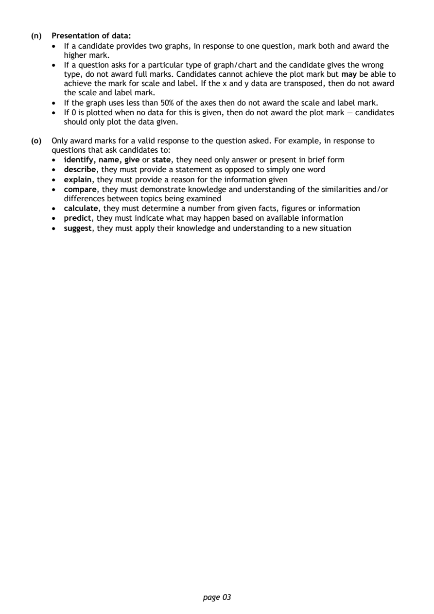
Selectable page text
(n) Presentation of data:
• If a candidate provides two graphs, in response to one question, mark both and award the
higher mark.
• If a question asks for a particular type of graph/chart and the candidate gives the wrong
type, do not award full marks. Candidates cannot achieve the plot mark but may be able to
achieve the mark for scale and label. If the x and y data are transposed, then do not award
the scale and label mark.
• If the graph uses less than 50% of the axes then do not award the scale and label mark.
• If 0 is plotted when no data for this is given, then do not award the plot mark — candidates
should only plot the data given.
(o) Only award marks for a valid response to the question asked. For example, in response to
questions that ask candidates to:
• identify, name, give or state, they need only answer or present in brief form
• describe, they must provide a statement as opposed to simply one word
• explain, they must provide a reason for the information given
• compare, they must demonstrate knowledge and understanding of the similarities and/or
differences between topics being examined
• calculate, they must determine a number from given facts, figures or information
• predict, they must indicate what may happen based on available information
• suggest, they must apply their knowledge and understanding to a new situation
page 03PDF page 4
Question 1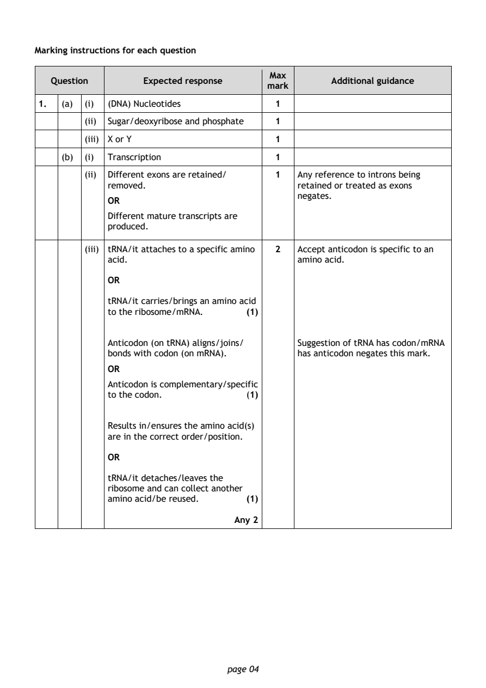
Selectable page text
Marking instructions for each question
Max
Question Expected response Additional guidance
mark
1. (a) (i) (DNA) Nucleotides 1
(ii) Sugar/deoxyribose and phosphate 1
(iii) X or Y 1
(b) (i) Transcription 1
(ii) Different exons are retained/ 1 Any reference to introns being
removed. retained or treated as exons
negates.
OR
Different mature transcripts are
produced.
(iii) tRNA/it attaches to a specific amino 2 Accept anticodon is specific to an
acid. amino acid.
OR
tRNA/it carries/brings an amino acid
to the ribosome/mRNA. (1)
Anticodon (on tRNA) aligns/joins/ Suggestion of tRNA has codon/mRNA
bonds with codon (on mRNA). has anticodon negates this mark.
OR
Anticodon is complementary/specific
to the codon. (1)
Results in/ensures the amino acid(s)
are in the correct order/position.
OR
tRNA/it detaches/leaves the
ribosome and can collect another
amino acid/be reused. (1)
Any 2
page 04PDF page 5
Question 2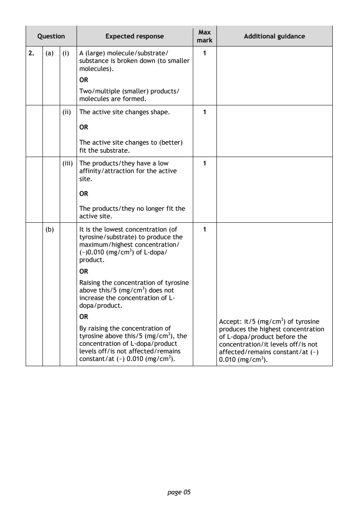
Selectable page text
Max
Question Expected response Additional guidance
mark
2. (a) (i) A (large) molecule/substrate/ 1
substance is broken down (to smaller
molecules).
OR
Two/multiple (smaller) products/
molecules are formed.
(ii) The active site changes shape. 1
OR
The active site changes to (better)
fit the substrate.
(iii) The products/they have a low 1
affinity/attraction for the active
site.
OR
The products/they no longer fit the
active site.
(b) It is the lowest concentration (of 1
tyrosine/substrate) to produce the
maximum/highest concentration/
(~)0.010 (mg/cm3) of L-dopa/
product.
OR
Raising the concentration of tyrosine
above this/5 (mg/cm3) does not
increase the concentration of L-
dopa/product.
OR
Accept: it/5 (mg/cm3) of tyrosine
By raising the concentration of produces the highest concentration
tyrosine above this/5 (mg/cm3), the of L-dopa/product before the
concentration of L-dopa/product concentration/it levels off/is not
levels off/is not affected/remains affected/remains constant/at (~)
constant/at (~) 0.010 (mg/cm3). 0.010 (mg/cm3).
page 05PDF page 6
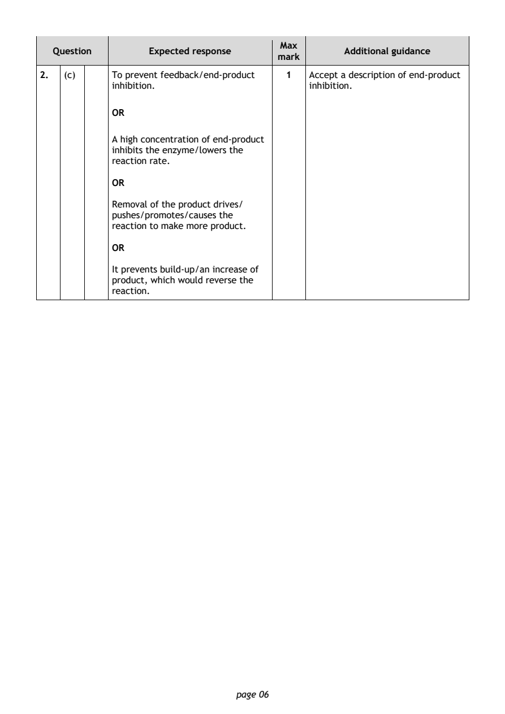
Selectable page text
Max
Question Expected response Additional guidance
mark
2. (c) To prevent feedback/end-product 1 Accept a description of end-product
inhibition. inhibition.
OR
A high concentration of end-product
inhibits the enzyme/lowers the
reaction rate.
OR
Removal of the product drives/
pushes/promotes/causes the
reaction to make more product.
OR
It prevents build-up/an increase of
product, which would reverse the
reaction.
page 06PDF page 7
Question 3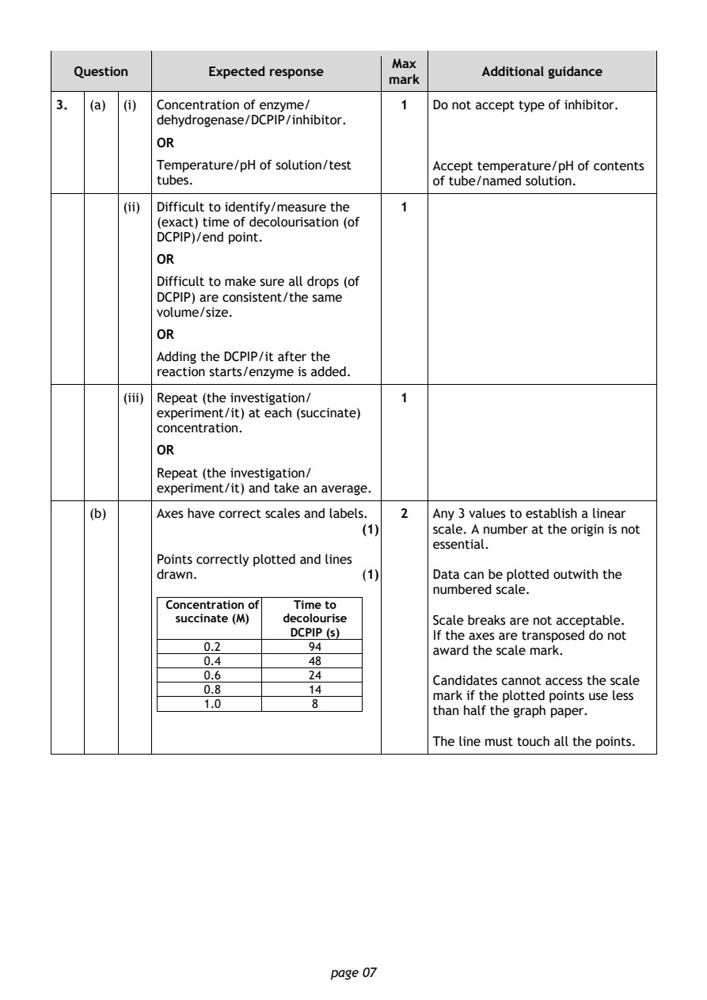
Selectable page text
Max
Question Expected response Additional guidance
mark
3. (a) (i) Concentration of enzyme/ 1 Do not accept type of inhibitor.
dehydrogenase/DCPIP/inhibitor.
OR
Temperature/pH of solution/test Accept temperature/pH of contents
tubes. of tube/named solution.
(ii) Difficult to identify/measure the 1
(exact) time of decolourisation (of
DCPIP)/end point.
OR
Difficult to make sure all drops (of
DCPIP) are consistent/the same
volume/size.
OR
Adding the DCPIP/it after the
reaction starts/enzyme is added.
(iii) Repeat (the investigation/ 1
experiment/it) at each (succinate)
concentration.
OR
Repeat (the investigation/
experiment/it) and take an average.
(b) Axes have correct scales and labels. 2 Any 3 values to establish a linear
(1) scale. A number at the origin is not
essential.
Points correctly plotted and lines
drawn. (1) Data can be plotted outwith the
numbered scale.
Concentration of Time to
succinate (M) decolourise Scale breaks are not acceptable.
DCPIP (s) If the axes are transposed do not
0.2 94 award the scale mark.
0.4 48
0.6 24
Candidates cannot access the scale
0.8 14
mark if the plotted points use less
1.0 8
than half the graph paper.
The line must touch all the points.
page 07PDF page 8
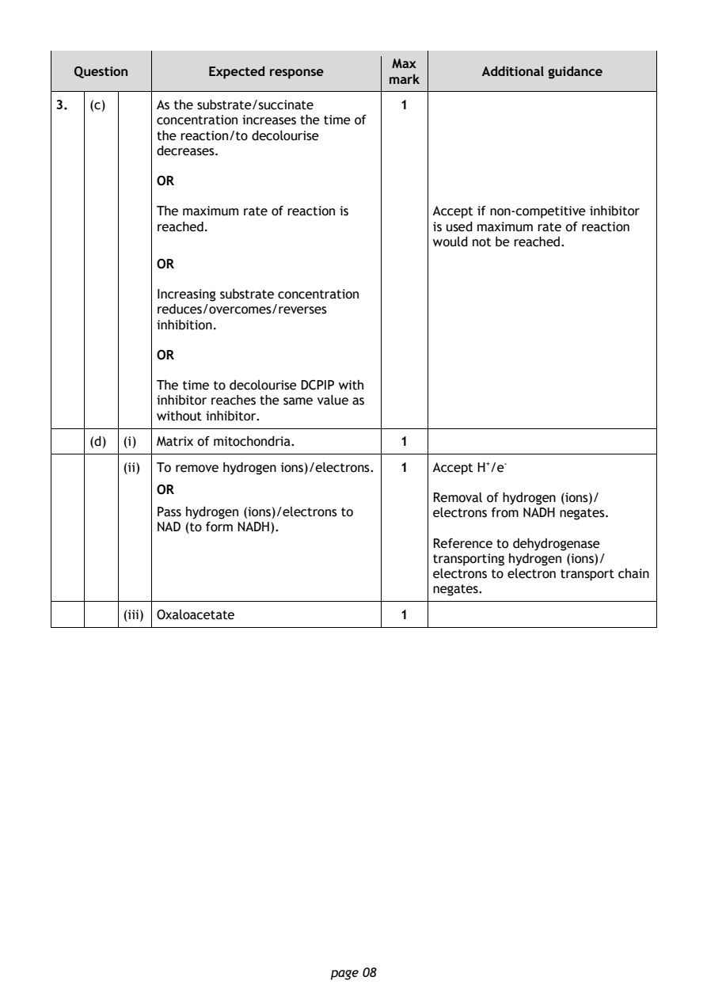
Selectable page text
Max
Question Expected response Additional guidance
mark
3. (c) As the substrate/succinate 1
concentration increases the time of
the reaction/to decolourise
decreases.
OR
The maximum rate of reaction is Accept if non-competitive inhibitor
reached. is used maximum rate of reaction
would not be reached.
OR
Increasing substrate concentration
reduces/overcomes/reverses
inhibition.
OR
The time to decolourise DCPIP with
inhibitor reaches the same value as
without inhibitor.
(d) (i) Matrix of mitochondria. 1
(ii) To remove hydrogen ions)/electrons. 1 Accept H+/e-
OR
Removal of hydrogen (ions)/
Pass hydrogen (ions)/electrons to electrons from NADH negates.
NAD (to form NADH).
Reference to dehydrogenase
transporting hydrogen (ions)/
electrons to electron transport chain
negates.
(iii) Oxaloacetate 1
page 08PDF page 9
Question 4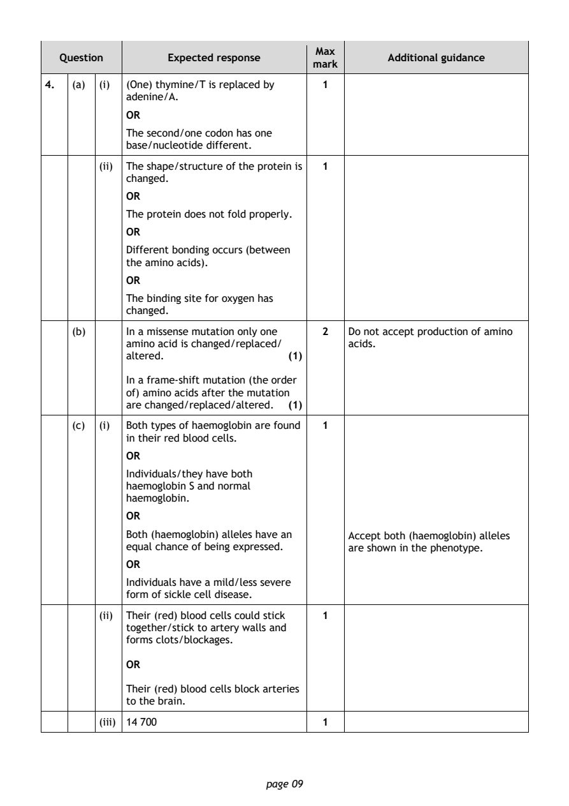
Selectable page text
Max
Question Expected response Additional guidance
mark
4. (a) (i) (One) thymine/T is replaced by 1
adenine/A.
OR
The second/one codon has one
base/nucleotide different.
(ii) The shape/structure of the protein is 1
changed.
OR
The protein does not fold properly.
OR
Different bonding occurs (between
the amino acids).
OR
The binding site for oxygen has
changed.
(b) In a missense mutation only one 2 Do not accept production of amino
amino acid is changed/replaced/ acids.
altered. (1)
In a frame-shift mutation (the order
of) amino acids after the mutation
are changed/replaced/altered. (1)
(c) (i) Both types of haemoglobin are found 1
in their red blood cells.
OR
Individuals/they have both
haemoglobin S and normal
haemoglobin.
OR
Both (haemoglobin) alleles have an Accept both (haemoglobin) alleles
equal chance of being expressed. are shown in the phenotype.
OR
Individuals have a mild/less severe
form of sickle cell disease.
(ii) Their (red) blood cells could stick 1
together/stick to artery walls and
forms clots/blockages.
OR
Their (red) blood cells block arteries
to the brain.
(iii) 14 700 1
page 09PDF page 10
Question 5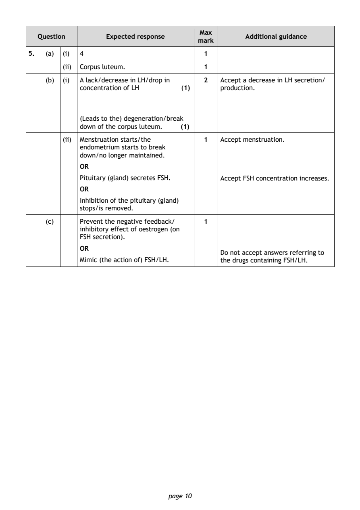
Selectable page text
Max
Question Expected response Additional guidance
mark
5. (a) (i) 4 1
(ii) Corpus luteum. 1
(b) (i) A lack/decrease in LH/drop in 2 Accept a decrease in LH secretion/
concentration of LH (1) production.
(Leads to the) degeneration/break
down of the corpus luteum. (1)
(ii) Menstruation starts/the 1 Accept menstruation.
endometrium starts to break
down/no longer maintained.
OR
Pituitary (gland) secretes FSH. Accept FSH concentration increases.
OR
Inhibition of the pituitary (gland)
stops/is removed.
(c) Prevent the negative feedback/ 1
inhibitory effect of oestrogen (on
FSH secretion).
OR
Do not accept answers referring to
Mimic (the action of) FSH/LH. the drugs containing FSH/LH.
page 10PDF page 11
Question 6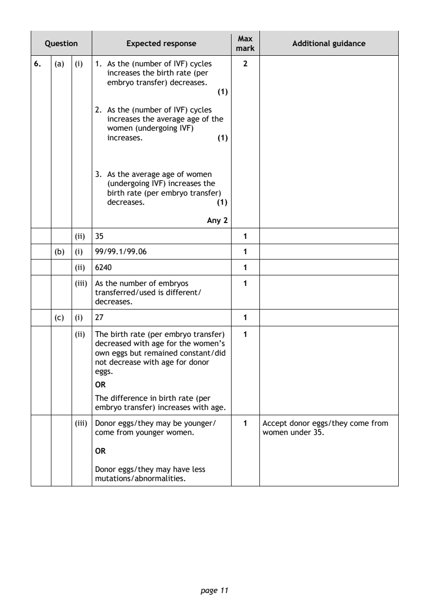
Selectable page text
Max
Question Expected response Additional guidance
mark
6. (a) (i) 1. As the (number of IVF) cycles 2
increases the birth rate (per
embryo transfer) decreases.
(1)
2. As the (number of IVF) cycles
increases the average age of the
women (undergoing IVF)
increases. (1)
3. As the average age of women
(undergoing IVF) increases the
birth rate (per embryo transfer)
decreases. (1)
Any 2
(ii) 35 1
(b) (i) 99/99.1/99.06 1
(ii) 6240 1
(iii) As the number of embryos 1
transferred/used is different/
decreases.
(c) (i) 27 1
(ii) The birth rate (per embryo transfer) 1
decreased with age for the women’s
own eggs but remained constant/did
not decrease with age for donor
eggs.
OR
The difference in birth rate (per
embryo transfer) increases with age.
(iii) Donor eggs/they may be younger/ 1 Accept donor eggs/they come from
come from younger women. women under 35.
OR
Donor eggs/they may have less
mutations/abnormalities.
page 11PDF page 12
Question 7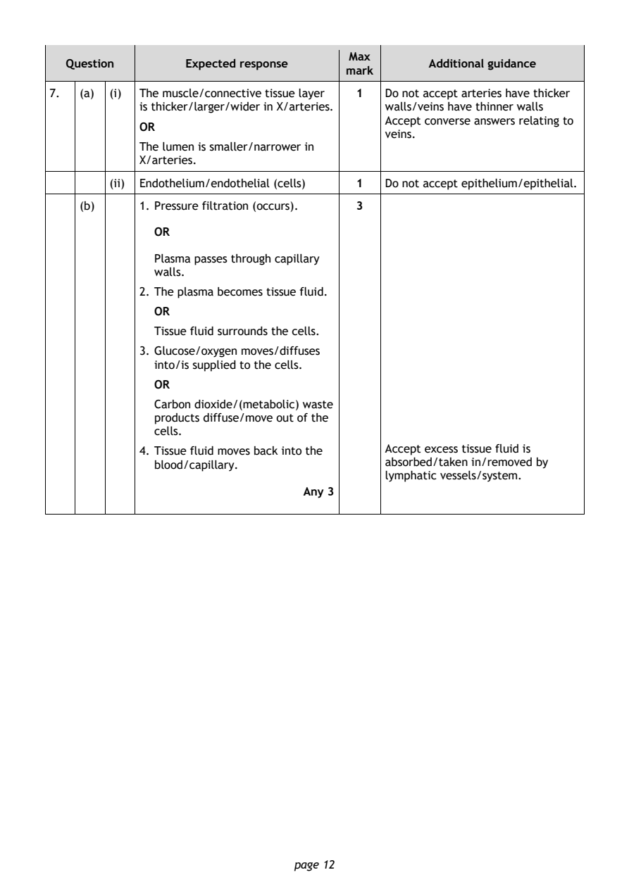
Selectable page text
Max
Question Expected response Additional guidance
mark
7. (a) (i) The muscle/connective tissue layer 1 Do not accept arteries have thicker
is thicker/larger/wider in X/arteries. walls/veins have thinner walls
Accept converse answers relating to
OR
veins.
The lumen is smaller/narrower in
X/arteries.
(ii) Endothelium/endothelial (cells) 1 Do not accept epithelium/epithelial.
(b) 1. Pressure filtration (occurs). 3
OR
Plasma passes through capillary
walls.
2. The plasma becomes tissue fluid.
OR
Tissue fluid surrounds the cells.
3. Glucose/oxygen moves/diffuses
into/is supplied to the cells.
OR
Carbon dioxide/(metabolic) waste
products diffuse/move out of the
cells.
4. Tissue fluid moves back into the Accept excess tissue fluid is
blood/capillary. absorbed/taken in/removed by
lymphatic vessels/system.
Any 3
page 12PDF page 13
Question 8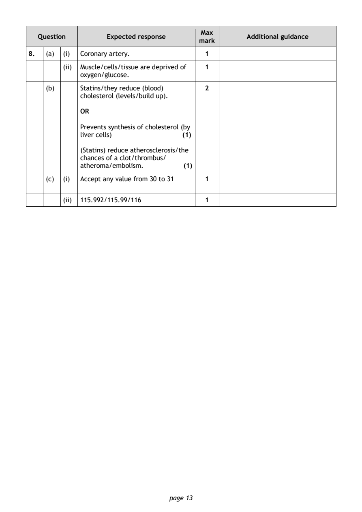
Selectable page text
Max
Question Expected response Additional guidance
mark
8. (a) (i) Coronary artery. 1
(ii) Muscle/cells/tissue are deprived of 1
oxygen/glucose.
(b) Statins/they reduce (blood) 2
cholesterol (levels/build up).
OR
Prevents synthesis of cholesterol (by
liver cells) (1)
(Statins) reduce atherosclerosis/the
chances of a clot/thrombus/
atheroma/embolism. (1)
(c) (i) Accept any value from 30 to 31 1
(ii) 115.992/115.99/116 1
page 13PDF page 14
Question 9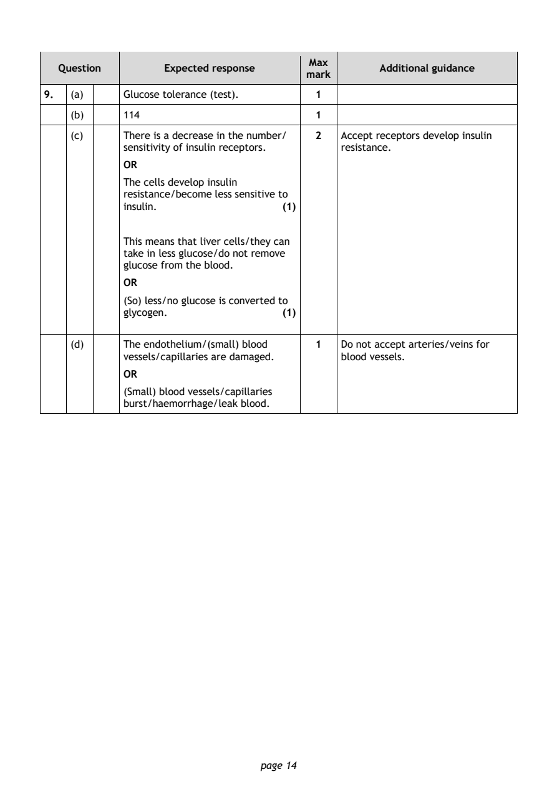
Selectable page text
Max
Question Expected response Additional guidance
mark
9. (a) Glucose tolerance (test). 1
(b) 114 1
(c) There is a decrease in the number/ 2 Accept receptors develop insulin
sensitivity of insulin receptors. resistance.
OR
The cells develop insulin
resistance/become less sensitive to
insulin. (1)
This means that liver cells/they can
take in less glucose/do not remove
glucose from the blood.
OR
(So) less/no glucose is converted to
glycogen. (1)
(d) The endothelium/(small) blood 1 Do not accept arteries/veins for
vessels/capillaries are damaged. blood vessels.
OR
(Small) blood vessels/capillaries
burst/haemorrhage/leak blood.
page 14PDF page 15
Question 10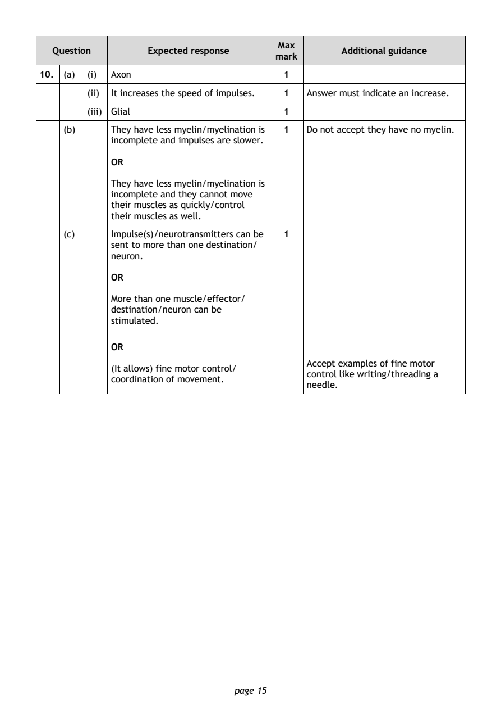
Selectable page text
Max
Question Expected response Additional guidance
mark
10. (a) (i) Axon 1
(ii) It increases the speed of impulses. 1 Answer must indicate an increase.
(iii) Glial 1
(b) They have less myelin/myelination is 1 Do not accept they have no myelin.
incomplete and impulses are slower.
OR
They have less myelin/myelination is
incomplete and they cannot move
their muscles as quickly/control
their muscles as well.
(c) Impulse(s)/neurotransmitters can be 1
sent to more than one destination/
neuron.
OR
More than one muscle/effector/
destination/neuron can be
stimulated.
OR
Accept examples of fine motor
(It allows) fine motor control/
control like writing/threading a
coordination of movement.
needle.
page 15PDF page 16
Question 11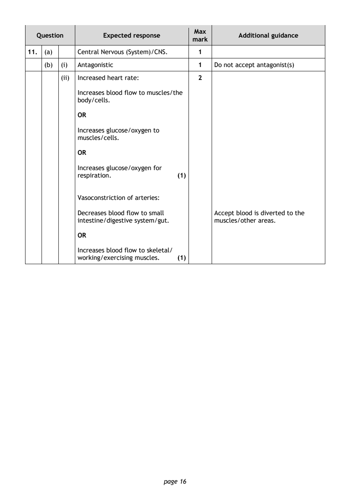
Selectable page text
Max
Question Expected response Additional guidance
mark
11. (a) Central Nervous (System)/CNS. 1
(b) (i) Antagonistic 1 Do not accept antagonist(s)
(ii) Increased heart rate: 2
Increases blood flow to muscles/the
body/cells.
OR
Increases glucose/oxygen to
muscles/cells.
OR
Increases glucose/oxygen for
respiration. (1)
Vasoconstriction of arteries:
Decreases blood flow to small Accept blood is diverted to the
intestine/digestive system/gut. muscles/other areas.
OR
Increases blood flow to skeletal/
working/exercising muscles. (1)
page 16PDF page 17
Question 12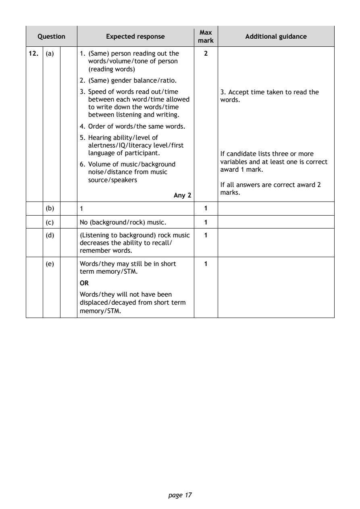
Selectable page text
Max
Question Expected response Additional guidance
mark
12. (a) 1. (Same) person reading out the 2
words/volume/tone of person
(reading words)
2. (Same) gender balance/ratio.
3. Speed of words read out/time 3. Accept time taken to read the
between each word/time allowed words.
to write down the words/time
between listening and writing.
4. Order of words/the same words.
5. Hearing ability/level of
alertness/IQ/literacy level/first
language of participant. If candidate lists three or more
variables and at least one is correct
6. Volume of music/background
award 1 mark.
noise/distance from music
source/speakers
If all answers are correct award 2
marks.
Any 2
(b) 1 1
(c) No (background/rock) music. 1
(d) (Listening to background) rock music 1
decreases the ability to recall/
remember words.
(e) Words/they may still be in short 1
term memory/STM.
OR
Words/they will not have been
displaced/decayed from short term
memory/STM.
page 17PDF page 18
Question 13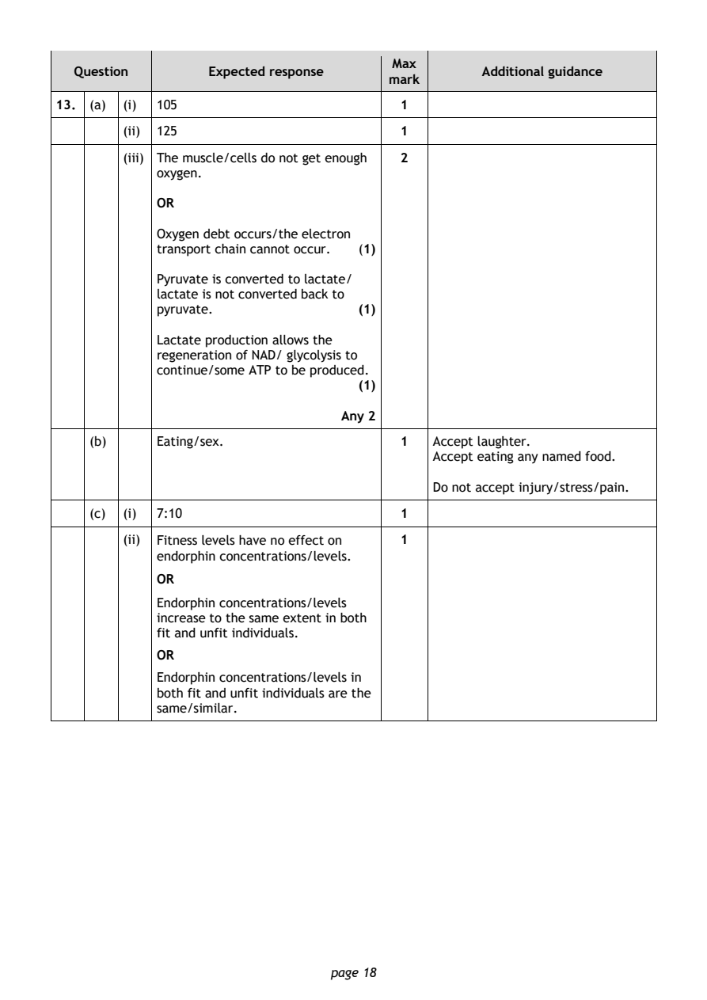
Selectable page text
Max
Question Expected response Additional guidance
mark
13. (a) (i) 105 1
(ii) 125 1
(iii) The muscle/cells do not get enough 2
oxygen.
OR
Oxygen debt occurs/the electron
transport chain cannot occur. (1)
Pyruvate is converted to lactate/
lactate is not converted back to
pyruvate. (1)
Lactate production allows the
regeneration of NAD/ glycolysis to
continue/some ATP to be produced.
(1)
Any 2
(b) Eating/sex. 1 Accept laughter.
Accept eating any named food.
Do not accept injury/stress/pain.
(c) (i) 7:10 1
(ii) Fitness levels have no effect on 1
endorphin concentrations/levels.
OR
Endorphin concentrations/levels
increase to the same extent in both
fit and unfit individuals.
OR
Endorphin concentrations/levels in
both fit and unfit individuals are the
same/similar.
page 18PDF page 19
Question 14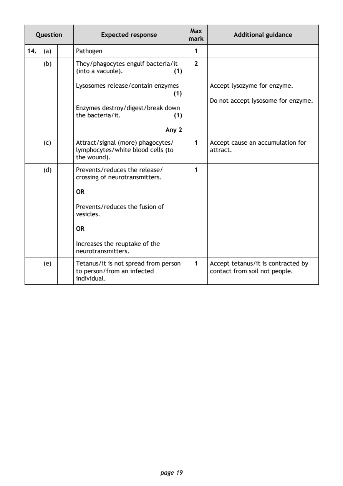
Selectable page text
Max
Question Expected response Additional guidance
mark
14. (a) Pathogen 1
(b) They/phagocytes engulf bacteria/it 2
(into a vacuole). (1)
Lysosomes release/contain enzymes Accept lysozyme for enzyme.
(1)
Do not accept lysosome for enzyme.
Enzymes destroy/digest/break down
the bacteria/it. (1)
Any 2
(c) Attract/signal (more) phagocytes/ 1 Accept cause an accumulation for
lymphocytes/white blood cells (to attract.
the wound).
(d) Prevents/reduces the release/ 1
crossing of neurotransmitters.
OR
Prevents/reduces the fusion of
vesicles.
OR
Increases the reuptake of the
neurotransmitters.
(e) Tetanus/it is not spread from person 1 Accept tetanus/it is contracted by
to person/from an infected contact from soil not people.
individual.
page 19PDF page 20
Question 15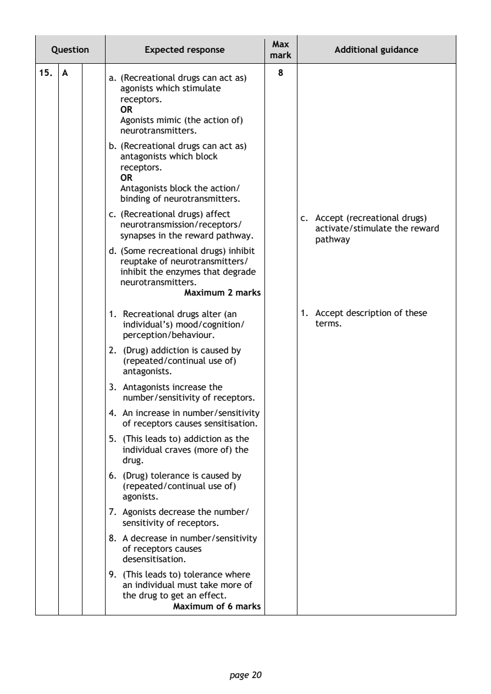
Selectable page text
Max
Question Expected response Additional guidance
mark
15. A 8
a. (Recreational drugs can act as)
agonists which stimulate
receptors.
OR
Agonists mimic (the action of)
neurotransmitters.
b. (Recreational drugs can act as)
antagonists which block
receptors.
OR
Antagonists block the action/
binding of neurotransmitters.
c. (Recreational drugs) affect
c. Accept (recreational drugs)
neurotransmission/receptors/
activate/stimulate the reward
synapses in the reward pathway.
pathway
d. (Some recreational drugs) inhibit
reuptake of neurotransmitters/
inhibit the enzymes that degrade
neurotransmitters.
Maximum 2 marks
1. Recreational drugs alter (an 1. Accept description of these
individual’s) mood/cognition/ terms.
perception/behaviour.
2. (Drug) addiction is caused by
(repeated/continual use of)
antagonists.
3. Antagonists increase the
number/sensitivity of receptors.
4. An increase in number/sensitivity
of receptors causes sensitisation.
5. (This leads to) addiction as the
individual craves (more of) the
drug.
6. (Drug) tolerance is caused by
(repeated/continual use of)
agonists.
7. Agonists decrease the number/
sensitivity of receptors.
8. A decrease in number/sensitivity
of receptors causes
desensitisation.
9. (This leads to) tolerance where
an individual must take more of
the drug to get an effect.
Maximum of 6 marks
page 20PDF page 21
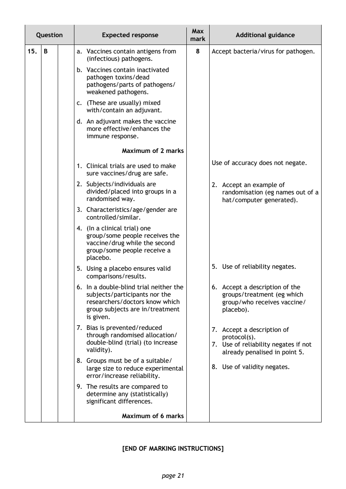
Selectable page text
Max
Question Expected response Additional guidance
mark
15. B a. Vaccines contain antigens from 8 Accept bacteria/virus for pathogen.
(infectious) pathogens.
b. Vaccines contain inactivated
pathogen toxins/dead
pathogens/parts of pathogens/
weakened pathogens.
c. (These are usually) mixed
with/contain an adjuvant.
d. An adjuvant makes the vaccine
more effective/enhances the
immune response.
Maximum of 2 marks
Use of accuracy does not negate.
1. Clinical trials are used to make
sure vaccines/drug are safe.
2. Subjects/individuals are 2. Accept an example of
divided/placed into groups in a randomisation (eg names out of a
randomised way. hat/computer generated).
3. Characteristics/age/gender are
controlled/similar.
4. (In a clinical trial) one
group/some people receives the
vaccine/drug while the second
group/some people receive a
placebo.
5. Use of reliability negates.
5. Using a placebo ensures valid
comparisons/results.
6. In a double-blind trial neither the 6. Accept a description of the
subjects/participants nor the groups/treatment (eg which
researchers/doctors know which group/who receives vaccine/
group subjects are in/treatment placebo).
is given.
7. Bias is prevented/reduced
7. Accept a description of
through randomised allocation/
protocol(s).
double-blind (trial) (to increase
7. Use of reliability negates if not
validity).
already penalised in point 5.
8. Groups must be of a suitable/
large size to reduce experimental 8. Use of validity negates.
error/increase reliability.
9. The results are compared to
determine any (statistically)
significant differences.
Maximum of 6 marks
[END OF MARKING INSTRUCTIONS]
page 21